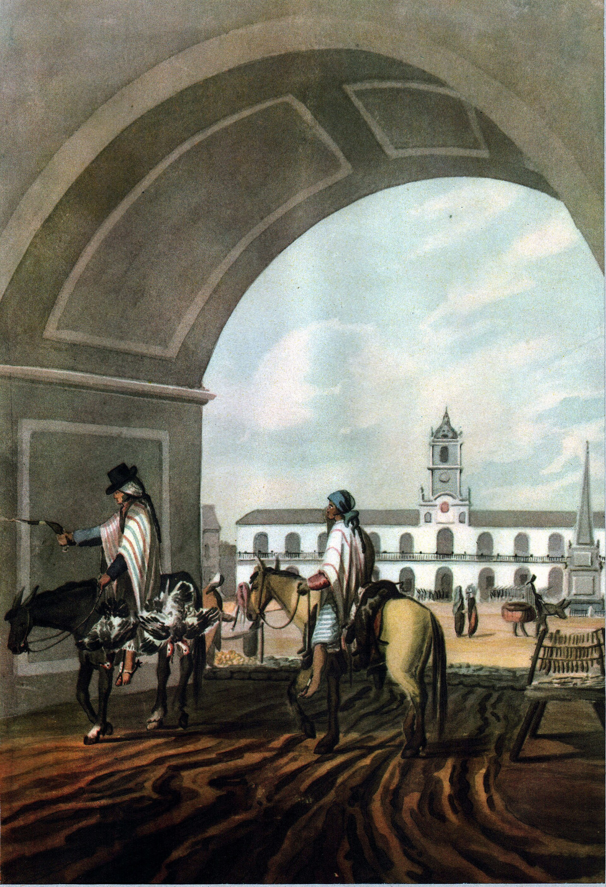
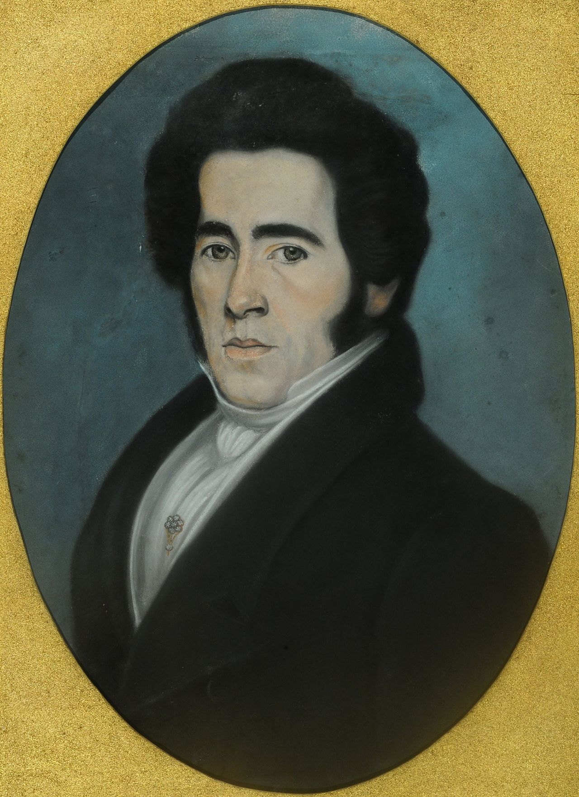
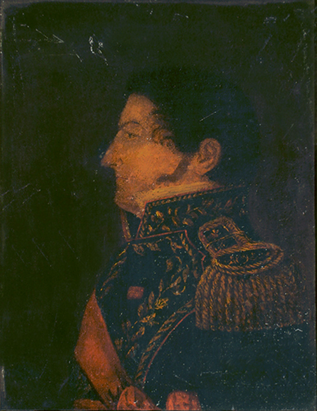
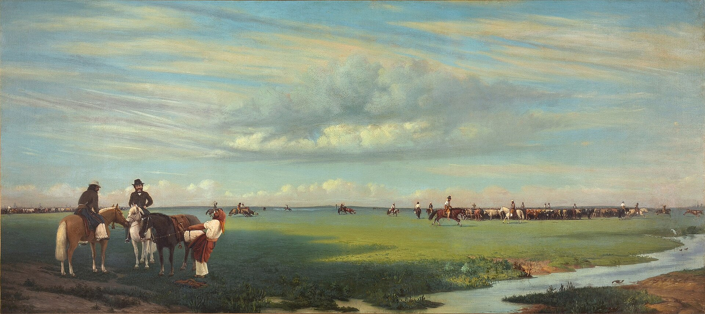

La Generacion del 80 y el debate sobre el arte nacional
Como el concepto de arte y civilizacion se vinculo con la creacion de instituciones artisticas, los viajes de formacion a Europa y la busqueda de un arte nacional hacia el Centenario.
Malosetti CostaDevotoGeneracion del 80CentenarioInstitucionesViajes a Europa
Tesis rapida
Desde la Generacion del 80 hacia el Centenario, el arte fue pensado como prueba de civilizacion y tambien como herramienta para producirla. Por eso se crean instituciones, se financian viajes a Europa y se buscan espacios de legitimacion internacional. El arte nacional nacio de una paradoja: representar temas locales con lenguajes y criterios de legitimacion europeos.
Esta es la idea que tiene que ordenar todo. No conviene convertir la respuesta en una lista de artistas: cada dato tiene que volver a la consigna.
Prueba
Una nacion moderna no podia exhibir solo riqueza, ferrocarriles e inmigracion. Tambien necesitaba museos, artistas, salones y obras reconocibles como alta cultura.
Herramienta
El arte debia educar el gusto, formar publico, disciplinar sensibilidades y completar el progreso material con simbolos e ideas.
Problema
La civilizacion no era una categoria neutral: ordenaba jerarquias entre Europa y America, ciudad y campo, elite y sectores populares, civilizado y barbaro.
Respuesta en 5 lineas / 3 obras
Modo memoria: si necesitan ordenar la exposicion en treinta segundos, esta es la secuencia minima.
Respuesta corta
El arte funciono como prueba e instrumento de civilizacion nacional.
SEBA, Ateneo, salones, becas, critica y MNBA formaron el campo artistico.
Europa dio lenguaje academico, tecnica y legitimacion internacional.
El arte nacional adapto esos lenguajes a pampa, frontera, trabajo, historia e identidad local.
La tension critica es que lo nacional se construyo desde una mirada urbana, elitista y civilizatoria.
Obras que salvan la respuesta
Con tres imagenes pueden cubrir la paradoja completa: aprendizaje europeo, legitimacion institucional y tema local.
Si se traban, vuelvan a esta secuencia. Es la columna vertebral para decirlo en voz alta sin perderse.
Contexto
Devoto permite ubicar la Argentina del Centenario: crecimiento economico, inmigracion, Estado, ciudad moderna y tambien tensiones sociales y politicas.
Arte y civilizacion
Malosetti muestra que las bellas artes aparecen como indicador de madurez nacional y como medio para formar sujetos civilizados.
Instituciones
SEBA, Ateneo, salones, becas, critica y MNBA crean el campo artistico: forman artistas, forman publico y legitiman obras.
Europa
Paris funciona como centro. Viajar es aprender el idioma visual reconocido internacionalmente, aunque el objetivo sea producir arte argentino.
Arte nacional
El resultado combina lenguaje europeo y tema local: pampa, frontera, gaucho, indigena, cautiva, historia patria, trabajo urbano.
Cierre critico
Ese arte nacional es contradictorio: incluye lo local como simbolo, pero muchas veces lo mira desde una elite urbana y europeizante.
Contexto Devoto
Devoto sirve para abrir el marco historico: hacia 1910 Argentina podia celebrarse como pais moderno, pero ese optimismo estaba lleno de tensiones.
El pais que parecia posible
Crecimiento agroexportador, ferrocarriles, inmigracion, urbanizacion, educacion publica y consolidacion estatal daban una imagen de progreso acelerado. Para la elite, el Centenario era una vidriera de esa Argentina moderna.
Uso oral: abrir diciendo que el arte entra dentro de un proyecto mas amplio de modernizacion nacional.
El progreso no alcanzaba
La riqueza material convivia con desigualdad, conflictividad social, crisis politica e integracion problematica de inmigrantes. Por eso la pregunta cultural era decisiva: como producir una identidad nacional comun.
Uso oral: complejizar la celebracion del Centenario: civilizar tambien era ordenar, integrar y jerarquizar.
Dato para no idealizar 1910: el Centenario fue vidriera de progreso, pero en mayo de 1910 el Estado declaro el estado de sitio. La nacion que se mostraba civilizada tambien suspendia garantias para controlar el conflicto social.
1870s-1880s: consolidacion estatal, expansion economica y confianza liberal/positivista en el progreso.
1876-1878: Sociedad Estimulo de Bellas Artes y revista El Arte en el Plata: primeras formulaciones fuertes del programa arte/civilizacion.
1884-1891: Schiaffino escribe desde Europa y sostiene que Buenos Aires debe completar su riqueza material con arte, ciencia e imaginacion.
1890: crisis economica y Revolucion del Parque: se atenua el optimismo de la modernizacion puramente material.
1910: Centenario: celebracion internacional de logros, pero tambien momento de ansiedad por identidad, conflicto social y legitimidad politica.
Malosetti
Malosetti no dice simplemente que "el arte civiliza"; analiza historicamente como esa formula fue construida, que intereses sostuvo y que exclusiones produjo.
Doble funcion
Las bellas artes eran vistas como resultado del progreso y como medio para producirlo. Una sociedad civilizada debia tener arte, y el arte debia ayudar a civilizar a la sociedad.
Taine
El positivismo de Taine relacionaba arte con raza, medio y momento. Eso permitia pensar que cada pueblo podia producir un arte propio, pero tambien instalaba jerarquias racializadas. Si las civilizaciones tienen ascenso, apogeo y decadencia, entonces el centro artistico no es eterno: Paris domina el presente, pero America podia imaginarse como futuro.
Raza latina
Schiaffino y otros imaginaron que la herencia latina e hispanica daba una predisposicion estetica. Esa idea legitimaba la esperanza de un futuro artistico argentino.
Punto critico: "civilizacion" funcionaba como palabra de prestigio, pero tambien como categoria de exclusion. Definia quienes representaban el futuro y quienes quedaban asociados a atraso, barbarie o amenaza. Civilizar tambien significaba regular gustos, habitos y sensibilidades.
Frase para decir
Malosetti sirve para mostrar que el arte no era un adorno del proyecto del 80, sino una parte simbolica de la construccion nacional. Pero esa construccion estaba atravesada por elitismo, positivismo y por la oposicion civilizacion/barbarie.
Instituciones
El arte nacional no nace solo de cuadros individuales. Nace tambien de instituciones que enseñan, exhiben, juzgan, financian y organizan la circulacion de las obras.
Sociedad Estimulo de Bellas Artes
Organiza enseñanza, exposiciones, debates y redes de artistas. Busca educar el gusto y diferenciar el "arte verdadero" de los productos considerados menores o comerciales.
Ateneo
Reune artistas, escritores e intelectuales. Sus exposiciones ayudan a consolidar un espacio publico para discutir el arte argentino y su relacion con la cultura nacional.
Salones, critica y prensa
La critica produce criterios de valor. La prensa amplifica polemicas, defiende becas, discute el gusto y conecta el arte con el progreso de la nacion.
Becas y Museo Nacional
Las pensiones a Europa forman artistas en circuitos legitimados. El MNBA consolida patrimonio, memoria visual y una idea estatal de cultura nacional.
Secuencia util: la SEBA ensena y arma programa; el Ateneo y los salones exhiben; la critica legitima; las becas llevan a Europa; el MNBA patrimonializa; las exposiciones internacionales consagran. Institucionalizar el arte era institucionalizar una imagen de la nacion.
Europa y Schiaffino
La relacion con Europa es el centro de la paradoja. Para construir un arte nacional argentino, primero habia que aprender en el lugar que se reconocia como centro internacional: Paris.
Paris como medida
Academias, salones y museos funcionaban como espacios de aprendizaje.
La aceptacion en Paris daba prestigio al artista argentino.
El lenguaje visual europeo era presentado como universal.
El regreso al pais permitia trasladar ese capital al campo local.
Schiaffino, mas que pintor
Fue critico, corresponsal, gestor cultural, historiador del arte y organizador institucional. Su papel permite unir obra, discurso, politica artistica y museo.
Idea clave: criticaba que Buenos Aires exportara materia prima pero no produjera objetos con "sello de idea".
Paradoja para memorizar: Buenos Aires podia imaginarse como futuro centro artistico solo si primero aceptaba que Paris era el centro presente. La autonomia no rompe con Europa; intenta apropiarse de sus reglas para usarlas en clave local.
Chicago 1893 como limite
La vuelta del malon viaja a una exposicion donde las bellas artes eran prueba internacional de civilizacion, pero Argentina no tiene pabellon propio y sus obras quedan en Manufacturas, lejos de la centralidad de Bellas Artes. No alcanzaba con tener obras: habia que lograr ubicacion, gestion y reconocimiento.
Saint Louis 1904 y gestion
En Saint Louis, Schiaffino aparece como gestor: organiza un envio argentino de Bellas Artes y busca ubicarlo junto a potencias artisticas. El problema no es solo pintar, sino hacer existir institucionalmente ese arte ante otros paises.
Referencia de clase: notebook Arte y Cultura Visual en Argentina, exposiciones internacionales y gestion de Schiaffino.
Crisis de 1890
Despues de la crisis economica y politica, el optimismo se vuelve mas defensivo. El arte sigue siendo necesario, pero ya no solo como celebracion: aparece como forma de estabilizar simbolicamente un progreso material que se revela fragil.
Cuestionamiento a las becas
En este clima crecen las dudas sobre las pensiones para artistas que estudiaban en Europa. El argumento utilitario era que, en un pais en crisis, convenia formar productores practicos antes que artistas.
Uso oral: esto muestra que el programa arte/civilizacion no era consenso puro: habia que defenderlo frente a quienes veian el arte como gasto improductivo.
Augusto Belin Sarmiento
Despues del exito del Salon del Ateneo de 1894, Belin Sarmiento defiende en La Prensa que las artes plasticas no son lujo ni pasatiempo. Para el, el dibujo tambien sirve al progreso material porque esta en la base del diseno industrial.
Frase para decir: Belin Sarmiento invierte la critica: no formar artistas no es ahorro moderno, sino quedar presos de un destino barbaro de simples productores agropecuarios.
Referencia textual: Malosetti Costa, "Arte y civilizacion", pp. 49-51.
Arte nacional
El arte nacional surge de una combinacion inestable: tecnicas y modelos europeos aplicados a temas considerados argentinos.
Lenguajes europeos
Composicion academica, pintura historica, naturalismo, desnudo de salon, criterios de exposicion, premios, jurados y legitimacion internacional.
Temas locales
Pampa, frontera, gaucho, indigena, cautiva, historia patria, religiosidad colonial, inmigracion, trabajo urbano y conflictos sociales.
Tension central: lo local puede aparecer como identidad nacional, pero tambien como barbarie, atraso o amenaza. Por eso una obra "nacional" no siempre incluye democraticamente a todos: muchas veces ordena quien pertenece y quien queda afuera.
Matriz de adaptacion
Sivori y Schiaffino
Sivori: naturalismo aprendido en Paris + cuerpo de una trabajadora + polemica local sobre gusto, clase y modernidad. Schiaffino: desnudo de salon + premio parisino + capital simbolico para organizar instituciones en Buenos Aires.
Della Valle y De la Carcova
Della Valle: pintura historica academica + malon, cautiva y pampa + circuito internacional. De la Carcova: realismo social europeo + conflicto urbano argentino despues de 1890.
Obras para analizar
Cada imagen tiene una funcion. No hay que describirla entera: hay que usarla para responder la consigna.
La vuelta del malon
Angel Della Valle, 1892. Oleo. MNBA.
Que muestra: pampa, malon, cautiva, frontera e indigena como amenaza.
Como usarla: es el ejemplo mas fuerte de arte nacional: tema local, formato academico y circulacion internacional en Chicago 1893.
Frase oral: "La obra vuelve nacional un tema local, pero lo hace desde la matriz civilizacion/barbarie".
Cuidado critico: no tomar la imagen como documento neutral: pinta una frontera ya derrotada como amenaza y legitima afectivamente la Campana del Desierto.
Que muestra: un desnudo naturalista de una trabajadora, lejos del desnudo idealizado.
Como usarla: condensa la formacion francesa y el regreso conflictivo de ese lenguaje a Buenos Aires; el problema no es solo el desnudo, sino el cuerpo social de una trabajadora.
Frase oral: "Sivori aprende en Paris y produce una obra que en Buenos Aires se vuelve batalla por el arte moderno".
Cuidado critico: no es simple copia europea; al volver, el lenguaje se reubica en un medio local con otras tensiones.
Que muestra: la Argentina exhibiendose en el centro europeo como pais moderno y prospero.
Como usarla: conecta arte, Estado e imagen internacional de nacion civilizada; el edificio despues se vuelve sede del MNBA, es decir, vidriera externa y patrimonio interno.
Frase oral: "La civilizacion tambien se actuaba hacia afuera: habia que mostrarse ante Europa".
Cuidado critico: no representa a toda la sociedad, sino una imagen oficial de progreso.
Que muestra: desocupacion, conflicto social, fabrica cerrada y angustia domestica.
Como usarla: muestra el reverso del optimismo modernizador despues de la crisis de 1890.
Frase oral: "La modernidad no produce solo progreso; tambien produce exclusion y conflicto".
Cuidado critico: no abandonar la consigna: usarla para explicar por que el discurso civilizatorio se vuelve mas urgente y por que empiezan a discutirse las becas y pensiones artisticas.
Duracion sugerida: 6 a 8 minutos. No leer palabra por palabra: usarlo como partitura para ensayar.
Persona A Apertura + marco
Presenta la consigna y la tesis.
Explica el contexto de Devoto.
Introduce Malosetti: arte como prueba y herramienta de civilizacion.
Marca que la idea de civilizacion no es neutral.
Persona B Instituciones + obras
Explica SEBA, Ateneo, salones, becas, critica y MNBA.
Desarrolla la paradoja Europa/arte nacional.
Analiza Sívori, Schiaffino y Della Valle.
Cierra con tensiones: identidad nacional, elite y civilizacion/barbarie.
1. Apertura
Idea: la Argentina del 80 queria mostrarse moderna y civilizada.
Nuestra tesis es que el arte fue pensado como parte del proyecto civilizatorio. No alcanzaba con riqueza e infraestructura: tambien habia que producir cultura, instituciones y una imagen nacional.
2. Contexto
Imagen posible: Pabellon Argentino o Buenos Aires moderna.
Devoto permite ver el clima del Centenario: crecimiento economico, inmigracion, ferrocarriles, urbanizacion y Estado. Pero ese progreso convivia con crisis, desigualdad y conflicto social.
3. Malosetti
Imagen posible: SEBA o La vuelta del malon.
Malosetti muestra que las bellas artes eran prueba de civilizacion y tambien medio para producirla. A la vez, critica esa idea porque organiza jerarquias: Europa sobre America, ciudad sobre campo, civilizado sobre barbaro.
4. Instituciones
Imagen posible: fotografia de la Sociedad Estimulo de Bellas Artes.
La SEBA, el Ateneo, los salones, la critica, las becas y el MNBA hacen posible el campo artistico. No son decoracion institucional: forman artistas, publico y criterios de legitimacion.
5. Europa y paradoja
Imagen posible: Sivori, Schiaffino o Pabellon Argentino.
Paris era el centro. Los artistas viajaban para aprender tecnicas y obtener reconocimiento. La paradoja es que la busqueda de un arte nacional argentino pasaba por aprender lenguajes europeos.
6. Arte nacional y cierre
Imagen posible: La vuelta del malon.
El arte nacional combina lenguaje europeo con temas locales. Pero esa identidad se construye desde una mirada urbana y elitista: lo indigena, la pampa o la frontera aparecen como signos de lo propio y, al mismo tiempo, como barbarie.
Consigna 1 - Artistas viajeros e imagen nacional
Pregunta: como los artistas viajeros y las expediciones cientificas contribuyeron a las primeras imagenes de Buenos Aires; que generos usaron; y por que litografia y periodicos ilustrados difundieron el costumbrismo.
Imagenes / obras para ubicar primero

Vista del Cabildo desde la Recova
Emeric Essex Vidal, 1817. Acuarela; difundida en 1820 como aguatinta/grabado coloreado.
Para que sirve: muestra Buenos Aires como ciudad observable: plaza, arquitectura, tipos sociales y vida cotidiana.
Frase oral: "El viajero convierte la ciudad en imagen legible para un publico local y extranjero".
El Recopilador N. 20, 1836. Taller de Bacle/Macaire.
Para que sirve: muestra la circulacion global de imagenes: una figura tomada de repertorios europeos se copia, invierte y adapta para lectores portenos.
Frase oral: "El lector porteno viajaba por imagenes sin salir de Buenos Aires".
Los viajeros y expediciones produjeron las primeras imagenes sistematicas de Buenos Aires porque miraron la ciudad como paisaje, documento y escena de costumbres. El grabado primero, y luego la litografia y la prensa ilustrada, transformaron esas imagenes en cultura visual circulante.
Conceptos clave
vistas urbanastipos y costumbresexpedicionesBrambila/Malaspinagrabadolitografiaperiodicos ilustradoscopia/adaptacioncostumbrismo
Autores: Munilla Lacasa; Gluzman, Munilla y Szir sobre Bacle; Gluzman y Munilla sobre publicaciones europeas en la prensa portena.
Notas de curso para enriquecer
Expediciones: no eran solo curiosidad cientifica; producian saber visual util para comercio, materias primas y expansion imperial.
Brambila/Malaspina: la vista de Buenos Aires ya nace como traduccion tecnica y ficcion parcial, compuesta para circular en Europa.
Vidal: muestra una ciudad puerto sin puerto: orilla, mercado, Recova, Piramide, trabajo afrodescendiente y vida cotidiana.
Bacle: la prensa ilustrada cambia la lectura familiar; incluso quien no leia podia aprender mirando imagenes pegadas o coleccionadas.
Ganado y marcas: el costumbrismo tambien registra propiedad, economia rural y orden material del territorio.
Respuesta oral en 2 minutos
Para responder, conviene partir de que Buenos Aires no tenia todavia una iconografia nacional consolidada. Los artistas viajeros y las expediciones cientificas ayudaron a producirla porque registraron la ciudad, la pampa cercana, los oficios, las modas y los tipos sociales. Sus imagenes mezclan mirada documental, curiosidad cientifica y pintoresquismo: no son fotografias neutrales, sino selecciones de lo que parecia representativo o exotico.
Muchos de esos artistas trabajaron generos como la vista urbana, el paisaje, el retrato, las escenas de tipos y costumbres, la documentacion topografica y la ilustracion cientifica. Conviene separar dos zonas: miradas viajeras o tecnicas, como Brambila, Vidal y Pellegrini; y talleres de reproduccion, como Bacle, Macaire u Onslow.
Antes de la litografia, el grabado ya permitia traducir una acuarela o dibujo a una plancha metalica y sacar muchas impresiones. Pero esa traduccion no era neutra: dependia de la mano del grabador, por eso una misma vista podia circular con variaciones.
La litografia fue decisiva porque volvio mas economica y flexible la reproduccion. El taller de Bacle y publicaciones como El Museo Americano y El Recopilador difundieron retratos, vistas, albumes de trajes y costumbres, laminas sueltas e imagenes tomadas de repertorios europeos adaptadas al publico local.
Asi, el costumbrismo no fue solo una descripcion amable de lo cotidiano. Fue una forma de ordenar visualmente la sociedad: mostrar como era Buenos Aires, quienes la habitaban, que practicas la definian y que imagen podia circular de ella.
Grabado, litografia y versiones
Grabado en metal
La imagen se pasaba a una plancha metalica con surcos; la tinta entraba en esas lineas y la prensa sacaba multiples copias. Como el grabador interpretaba el dibujo original, el resultado podia cambiar entre versiones.
Frase breve: "La reproduccion no era copia automatica; era traduccion visual".
Litografia
La imagen se dibujaba sobre piedra caliza con materiales grasos y se imprimia por presion. Era mas rapida y barata para combinar imagen, texto, mapas, retratos, vistas y papeles comerciales.
Frase breve: "Con la litografia, la imagen se vuelve cotidiana, barata y periodica".
Dato del notebook: el caso de Malaspina/Brambila y las primeras vistas de Buenos Aires sirve para explicar que algunas imagenes nacen como expedicion, dibujo o acuarela, pero llegan al publico europeo como grabado. Si hay dos versiones, no es un error menor: muestra que la imagen nacional se construye en una cadena de traducciones tecnicas.
Cierre critico
Estas primeras imagenes ayudan a inventar una Buenos Aires visible, pero lo hacen desde miradas parciales: viajeros, elites, talleres urbanos y circuitos impresos. Por eso conviene hablar de construccion de imagen nacional, no de reflejo transparente de la realidad.
Consigna 2 - Retrato, estatus y sociabilidad
Pregunta: analizar el retrato en la primera mitad del siglo XIX y comparar retrato burgues, de aparato, miniatura, litografia y daguerrotipo segun produccion, circulacion y consumo.
Imagenes / obras para ubicar primero

Retrato de Manuel J. de Guerrico
Carlos Enrique Pellegrini, siglo XIX. MNBA.
Para que sirve: retrato de elite: posicion social, respetabilidad, capital cultural y memoria familiar.
Frase oral: "El retrato muestra una persona, pero tambien muestra una posicion social".
El retrato fue una herramienta social porque producia presencia, estatus y pertenencia. Segun la tecnica, podia circular como objeto familiar, signo de poder, imagen reproducible o prueba fotografica de identidad.
Autores: Munilla para el arte del periodo; Burke para fotografia/retrato como documento; Myers para sociabilidad de elite, tertulias, redes familiares y politicas.
Notas de curso para enriquecer
Miniatura: objeto caro, privado y de memoria familiar; tambien muestra una division de genero dentro del campo artistico.
Daguerrotipo: imagen unica sobre placa metalica, guardada en caja o terciopelo; hereda la logica preciosa de la miniatura.
San Martin 1848: posa con la mano dentro del saco, como codigo heroico napolenico; la fotografia no borra convenciones pictoricas.
Burke: no confiar en la imagen como transparencia; retrato y fotografia pueden fabricar estatus, autoridad o belleza.
Memoria y muerte: retratos post mortem y familiares muestran que la imagen conserva presencia cuando el cuerpo ya no esta.
Comparacion rapida de formatos
Retrato de elite
Encargo privado, respetabilidad, memoria familiar, capital cultural y consumo domestico.
Retrato de aparato
Autoridad publica, uniforme, pose, atributos politicos y escenificacion del poder.
Miniatura
Objeto pequeno, portable y afectivo, ligado al cuerpo, a la intimidad y a redes familiares.
Litografia / daguerrotipo
La litografia multiplica retratos; el daguerrotipo promete verdad visual, pero conserva pose, convencion y estatus.
Respuesta oral en 2 minutos
La idea central es que el retrato en la primera mitad del siglo XIX no era solamente parecido fisico. Era una practica social: servia para afirmar estatus, conservar memoria, circular afectos y construir presencia publica.
El retrato de elite o burgues funcionaba en el ambito familiar y social: mostraba respetabilidad, gusto, educacion y pertenencia. Se producia por encargo, circulaba en casas y redes familiares, y se consumia como signo de memoria y distincion. En cambio, el retrato de aparato intensificaba los signos de poder: uniforme, banda, postura, cortinados, atributos politicos o militares. No busca solo intimidad, sino autoridad.
La miniatura era otra logica: pequena, portatil, asociada al afecto y a la memoria privada. Circulaba cerca del cuerpo o dentro de redes intimas. La litografia, en cambio, permitia reproducir retratos y llevarlos a un publico mas amplio: hombres publicos, lideres, artistas o personajes politicos podian circular en papel.
Con el daguerrotipo aparece una tecnologia nueva. Segun Burke, la fotografia parece un documento transparente, pero tambien hay que leer pose, convenciones y usos sociales. El daguerrotipo era unico, caro y moderno: prometia fidelidad mecanica, pero seguia organizando estatus y memoria.
Myers ayuda a ubicar el contexto: la elite portena construia sociabilidad en casas, tertulias, teatros, asociaciones y redes politicas. En ese mundo, tener y circular retratos era una forma de decir quien era uno y a que mundo pertenecia.
Cierre critico
El retrato parece centrarse en individuos, pero en realidad muestra relaciones sociales. Cada tecnica ordena una forma distinta de produccion, circulacion y consumo: casa, cuerpo, imprenta, Estado, mercado y memoria.
Consigna 3 - Rosismo, imagen y propaganda federal
Pregunta: como se manifesto la identidad federal en imagenes durante el rosismo; vincular retratistica de Garcia del Molino, albumes rurales de Morel y uso politico de la imagen.
Imagenes / obras para ubicar primero

Retrato del Restaurador
Fernando Garcia del Molino, siglo XIX.
Para que sirve: retrato politico: rostro, pose, punzo y autoridad.
Frase oral: "El retrato de Rosas hace visible el poder federal".
Durante el rosismo, la imagen funciono como publicidad politica: el retrato construyo autoridad, el punzo hizo visible la adhesion, el costumbrismo federal represento una comunidad rural ordenada y la litografia multiplico esos signos en la vida cotidiana.
Autores: Roberto Amigo para Morel; Munilla, Szir y Gluzman para litografia, cultura visual y multiplicacion de imagenes.
Notas de curso para enriquecer
La familia del gaucho: gorro frigio, rebenque, mate, hoz, pico, pala y rancho construyen al gaucho como padre, labrador y pequeno productor.
Frontera rosista: la campana de 1832-1834 y los pactos con caciques permiten imaginar una pampa pacificada bajo control federal.
Indios pampas: Morel aplica codigos academicos del cuerpo para mostrar indigenas pacificos, no maloneros.
Moda federal: punzo, peinetones, divisas y mensajes pro-Rosas hacen visible la adhesion en objetos cotidianos.
Mirada extranjera: Monvoisin y Rugendas leen al soldado rosista con exotismo: mate, chiripa, gorro, color y pose producen diferencia.
Respuesta oral en 2 minutos
Para responder, partiria de una idea: durante el rosismo la imagen no fue solo arte ni documento, sino una herramienta para fabricar identidad politica federal.
Garcia del Molino permite pensar el retrato como imagen de poder. En los retratos de Rosas, el parecido importa, pero importan mas los signos: pose, autoridad, vestimenta, rojo punzo y presencia del Restaurador. Ver el rostro de Rosas era ver una forma de orden politico.
Con Carlos Morel aparece otra capa. Roberto Amigo habla de costumbrismo federal: sus gauchos, pulperias, soldados, indios amigos y familias rurales no son escenas inocentes. En La familia del gaucho, el mundo rural aparece pacificado, jerarquizado y vinculado a la comunidad federal. El gaucho no aparece como amenaza, sino como paisano, soldado o padre dentro del orden rosista.
La litografia agrega la dimension de circulacion. A partir de Bacle y otros talleres, retratos, divisas, lemas y simbolos federales podian reproducirse en papel y objetos. La politica entraba en la vida diaria: ropa, impresos, fiestas, retratos, colores y cuerpos.
Por eso Garcia del Molino, Morel y la litografia muestran tres niveles de la propaganda: retratar al lider, representar su base social y multiplicar los signos de pertenencia.
Cierre critico
El rosismo entendio que gobernar tambien era producir imagenes. Pero esas imagenes no son neutrales: indican que color, que cuerpo, que rostro y que gesto pertenecen a la comunidad politica.
Consigna 5 - Paisaje pampeano, civilizacion y barbarie
Pregunta: como se dio el paisaje pampeano en el siglo XIX y como encarna la tension civilizacion/barbarie, de Prilidiano Pueyrredon a Eduardo Sivori.
Imagenes / obras para ubicar primero

El rodeo
Prilidiano Pueyrredon, 1861. MNBA.
Para que sirve: pampa productiva: propietario, capataz, peon, estancia, ganado y orden social.
Frase oral: "La pampa puede aparecer como riqueza organizada, no solo como desierto".
El paisaje pampeano no fue neutro: fue un campo ideologico. Podia verse como territorio productivo y civilizado, como desierto amenazante, como frontera violenta o como horizonte moderno. Esa oscilacion encarna la tension civilizacion/barbarie.
Autores: Munilla; Malosetti Costa sobre cautivas; Malosetti Costa y Penhos sobre iconografia del desierto argentino.
Matriz rapida: tres pampas posibles
Pampa a poblar
La llanura aparece como extension casi marina o desertica. La imagen privilegia la epopeya de ocupar, medir y hacer habitable el territorio.
Pampa de conflicto
La frontera se narra con cautivas, malones, fortines e indigenas. Rugendas y Della Valle permiten ver como la pampa se vuelve escenario dramatico de civilizacion/barbarie.
Pampa autonoma
Despues de la Campana del Desierto, el paisaje puede mirarse como pampa "pacificada": horizonte, cielo, topografia y extension como problema plastico. Esa calma tambien depende de una violencia previa.
Notas de curso para enriquecer
Discursos previos: Sarmiento y Echeverria cargan la pampa como desierto, barbarie, tierra de infieles y mundo al que imprimir civilizacion.
Pueyrredon: civilizar la pampa significa volverla productiva: ganado, trabajo, propiedad y presencia criolla organizada.
Rugendas: fija una gramatica visual del malon: incendio, huida, familia amenazada y naturaleza convertida en frontera violenta.
Sivori: vacia la pampa de anecdota; sin gauchos, ombues ni malones, la extension y la topografia se vuelven tema moderno.
Thomas Gibson: dos tercios de cielo y un tercio de tierra ayudan a visualizar la inmensidad pampeana como paisaje nacional.
Respuesta oral en 2 minutos
La idea central es que el paisaje pampeano del siglo XIX no representa simplemente naturaleza. Representa un conflicto: que hacer con la pampa y como incorporarla a la nacion.
En Pueyrredon, la pampa puede aparecer vinculada a la estancia, el ganado, el ombu, la carreta, el descanso y el trabajo rural. Obras como El rodeo o Un alto en el campo muestran un campo socialmente organizado. Ahi la pampa no es puro vacio: es territorio productivo, jerarquico y habitable.
Pero en la cultura del siglo XIX tambien aparece la pampa como desierto y frontera. Esa palabra "desierto" no significa que no hubiera habitantes, sino que desde la mirada estatal y urbana se la piensa como espacio a conquistar, ordenar o civilizar. Ahi entran las imagenes de malones, cautivas e indigenas como figuras de barbarie.
Malosetti muestra que la cautiva blanca condensa una fantasia politica y erotica: el cuerpo femenino aparece como frontera amenazada por la barbarie. Desde Rugendas hasta Della Valle, esa figura no solo narra un episodio: convierte el territorio en drama ideologico. La vuelta del malon es clave porque vuelve nacional ese conflicto, pero lo hace retrospectivamente, cuando la amenaza indigena ya estaba derrotada como fuerza militar central.
Blanes, con la Ocupacion militar del Rio Negro, muestra el otro lado: la violencia estatal representada como orden y civilizacion. Y con Sivori, la pampa se vuelve tambien problema moderno de paisaje: horizonte bajo, cielo enorme, topografia y observacion directa. De Pueyrredon a Sivori cambia el lenguaje, pero la pampa sigue siendo una pregunta sobre identidad nacional.
Cierre critico
La pampa no es un fondo vacio: es una escena de disputa. El arte la convierte en imagen nacional, pero esa imagen muchas veces justifica jerarquias, conquistas y exclusiones bajo la palabra civilizacion.
Preguntas posibles
Por que el arte era una cuestion nacional y no solo estetica?
Porque funcionaba como prueba de civilizacion. Tener artistas formados, museos, salones y obras reconocibles era una forma de demostrar que Argentina era una nacion moderna, no solo una economia agroexportadora.
Que aporta Taine al argumento?
La idea de que el arte depende de raza, medio y momento permite imaginar un arte propio de cada pueblo. Pero en el contexto argentino esa teoria tambien arrastra jerarquias racializadas y una mirada positivista.
Que papel cumplen los viajes a Europa?
Son viajes de aprendizaje y legitimacion. Los artistas van a Paris para aprender tecnicas y criterios reconocidos; despues traen ese capital simbolico al campo artistico local.
Que pasa con las becas despues de la crisis de 1890?
Empiezan a ser mas cuestionadas porque el progreso material ya no parece tan seguro y aparece una mirada utilitaria del gasto publico. La respuesta de figuras como Augusto Belin Sarmiento es que el arte no es lujo: las artes del dibujo tambien sirven al progreso economico, al diseno y a la industria.
Por que Schiaffino es clave?
Porque une varias funciones: pintor, critico, gestor, historiador y organizador institucional. Sirve para mostrar que el arte nacional fue tambien una politica cultural.
Como se relacionan Devoto y Malosetti?
Devoto da el contexto de modernizacion y tensiones hacia el Centenario. Malosetti muestra como, dentro de ese contexto, el arte se vuelve una herramienta simbolica para completar el progreso material.
Por que es problematica la idea de civilizacion?
Porque no describe simplemente una mejora universal: ordena jerarquias. Puede ubicar a Europa, la ciudad y la elite del lado del futuro, y al campo, lo indigena o lo popular del lado de la barbarie.
Como evitar que Della Valle quede como "documento" del malon?
Aclarar que La vuelta del malon se pinta en 1892, despues de la Campana del Desierto. La obra no muestra una amenaza actual en sentido directo: organiza una memoria dramatica de la frontera que ayuda a justificar la violencia estatal previa.
Que aporta Serie Ibarra a la consigna sobre Rosas?
Permite mostrar que la propaganda federal no solo se apoya en el retrato de Rosas. Morel tambien construye una imagen positiva y ordenada del mundo rural, incluyendo indios pacificados o negociados dentro de la frontera rosista.


.jpg){kind=link}
{kind=link}
{kind=link}
{kind=link}
{kind=link}
{kind=link}
{kind=link}
{kind=link}
{kind=link}
{kind=link}
{kind=link}
{kind=link}
{kind=link}
{kind=link}
{kind=link}
{kind=link}
{kind=link}
{kind=link}
{kind=link}
_-_Carlos_Morel.jpg){kind=link}
{kind=link}
{kind=link}
{kind=link}
{kind=link}
{kind=link}
{kind=link}
{kind=link}